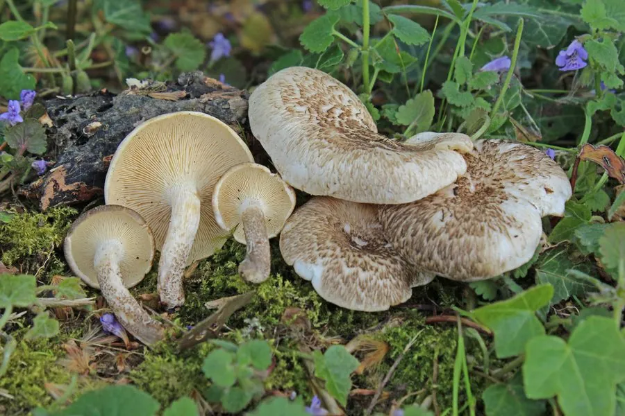

真菌 · 真菌界
虎皮香菇 Lentinus tigrinus

多孔菌科木腐菌，菌盖淡黄底上散布黑褐色鳞片如虎皮，多生于阔叶树枯木，幼嫩时可食但质地坚韧。
- 分类
- 门担子菌门纲伞菌纲目伞菌目科多孔菌科属韧伞属
- 栖息环境
- 阔叶树枯木、倒木与树桩上，春夏秋均可发生
- 地理分布
- 北半球温带至亚热带广布，中国各地及欧洲、北美常见
- 保护级别
- 暂无评估；常见木腐菌，种群稳定
物种志
虎皮香菇的子实体中等，菌盖直径 3–10 厘米，初期凸起，后平展至中央下凹，表面淡黄至黄褐色，密布黑褐至暗褐色鳞片，呈同心环状排列，形似虎皮，边缘常开裂。菌肉白色，薄而韧。菌褶白色至淡黄，密集，边缘有细锯齿，延生。菌柄长 2–6 厘米，直径 0.5–1.5 厘米，中生至偏生，表面有鳞片，基部有菌丝。孢子印白色。
虎皮香菇生于杨、柳、榆等阔叶树的枯木、倒木与树桩上，春夏秋均可发生，是常见的木腐菌，能分解木材中的纤维素与木质素。幼嫩菌盖可食，但肉质坚韧、风味一般，多被切碎炒食或做汤；老熟后质地如革，不宜食用。它对木材有一定危害，是储木场的常见腐朽菌，但在森林生态系统中承担着分解枯木、促进物质循环的重要作用。
形态与习性
- 菌盖直径 3–10 厘米，淡黄底布黑褐鳞片如虎皮
- 菌柄长 2–6 厘米，中生至偏生，有鳞片
- 孢子印白色，孢子椭圆形
- 生境阔叶树枯木与树桩，春夏秋发生
- 食用性幼嫩可食，肉质坚韧，老熟不宜食
- 生态作用木腐菌，分解枯木促进物质循环
趣味知识
- 它菌盖上的黑褐色鳞片呈同心环排列，远看像一张虎皮，故名虎皮香菇。
- 虎皮香菇是木腐菌，能分解木材中的木质素，在森林碳循环中扮演分解者角色。
- 幼嫩时切片炒食尚可，老熟后菌肉如皮革，嚼不动也难消化。
- 它偶尔会生长在活树的伤口处，是储木场需要防范的腐朽菌之一。